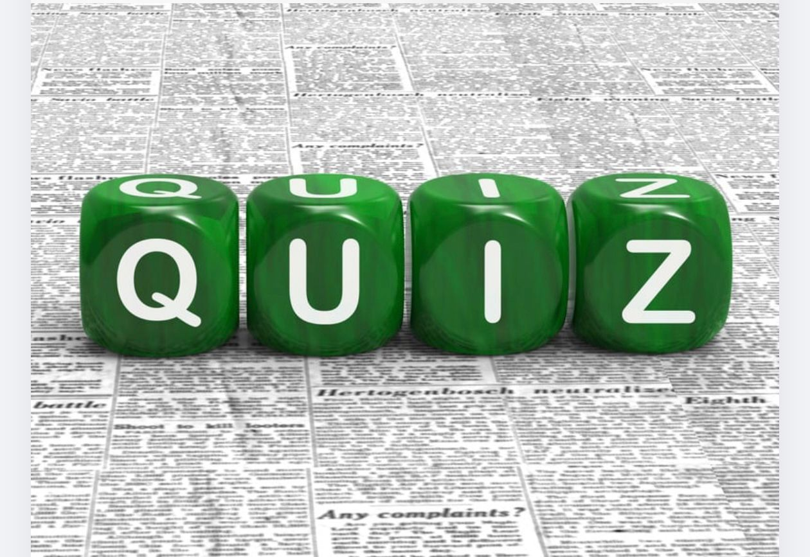

Le coin des quiz
Apprenez en vous amusant autour des grands enjeux environnementaux et sociaux.
Les quiz de Comité Vert Guinée sont pensés comme des moments ludiques et accessibles pour découvrir, comprendre et explorer les grands sujets du développement durables qui vous seront les plus utiles. Les questions sont conçues pour être claires et pertinentes, vous permettant d'obtenir des résultats personnalisés.
Amusez vous sérieusement !
Trouvez votre quiz